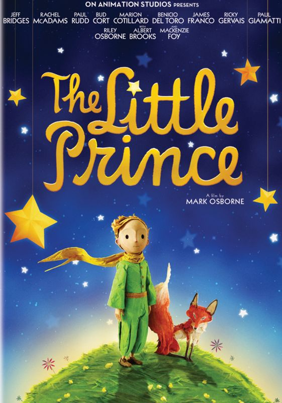

This article is about the novella. For the animated film, see The Little Prince (2015 film). For other uses, see Little Prince.
The Little Prince(French: Le Petit Prince, pronounced is a novella by French aristocrat,
writer, and aviator Antoine de Saint-Exupéry. It was first published in English and French in the US by Reynal &
Hitchcock in April 1943, and posthumously in France following the liberation of France as Saint-Exupéry's works had
been banned by the Vichy Regime. The story follows a young prince who visits various planets in space, including
Earth, and addresses themes of loneliness, friendship, love, and loss. Despite its style as a children's book,
The Little Prince makes observations about life, adults and human nature.
The Little Prince became Saint-Exupéry's most successful work, selling an estimated 140 million copies worldwide, which
makes it one of the best-selling and most translated books ever published. It has been translated into 301 languages
and dialects. The Little Prince has been adapted to numerous art forms and media, including audio recordings, radio
plays, live stage, film, television, ballet, and opera.
Tone and writing style
The story of The Little Prince is recalled in a sombre, measured tone by the pilot-narrator, in memory of his small
friend, "a memorial to the prince—not just to the prince, but also to the time the prince and the narrator had together.
" The Little Prince was created when Saint-Exupéry was "an ex-patriate and distraught about what was going on in his
country and in the world."According to one analysis, "the story of the Little Prince features a lot of fantastical,
unrealistic elements.... You can't ride a flock of birds to another planet... The fantasy of the Little Prince works
because the logic of the story is based on the imagination of children, rather than the strict realism of adults."
An exquisite literary perfectionist, akin to the 19th century French poet Stéphane Mallarmé, Saint-Exupéry produced
draft pages "covered with fine lines of handwriting, much of it painstakingly crossed out, with one word left standing
where there were a hundred words, one sentence substitut[ing] for a page..." He worked "long hours with great concentration.
" According to the author himself, it was extremely difficult to start his creative writing processes.Biographer Paul Webster
wrote of the aviator-author's style: "Behind Saint-Exupéry's quest for perfection was a laborious process of editing and
rewriting which reduced original drafts by as much as two-thirds."[24] The French author frequently wrote at night, usually
starting at about 11 p.m. accompanied by a tray of strong black coffee. In 1942 Saint-Exupéry related to his
American English teacher, Adèle Breaux, that at such a time of night he felt "free" and able to concentrate,
"writing for hours without feeling tired or sleepy", until he instantaneously dozed off.[22] He would wake up later,
in daylight, still at his desk, with his head on his arms. Saint-Exupéry stated it was the only way he could work,
as once he started a writing project it became an obsession.
Though the story is more or less understandable, the narrator made almost no connection from when the little prince
travelled between planets. He purposely did that so that the book felt like it was told from a secretive little boy.
Background
Upon the outbreak of the Second World War, a laureate of several of France's highest literary awards and a successful
pioneering aviator prior to the war, Saint-Exupéry initially flew with a reconnaissance squadron as a reserve
military pilot in the Armée de l'Air (French Air Force). After France's defeat in 1940 and its armistice with
Germany, he and Consuelo fled Occupied France and sojourned in North America, with Saint-Exupéry first arriving by
himself at the very end of December 1940. His intention for the visit was to convince the United States to quickly
enter the war against Nazi Germany and the Axis forces, and he soon became one of the expatriate voices of the
French Resistance. In the midst of personal upheavals and failing health, he produced almost half of the writings
for which he would be remembered, including a tender tale of loneliness, friendship, love and loss, in the form of
a young prince visiting Earth.
An earlier memoir by the author recounted his aviation experiences in the Sahara, and he is thought to have drawn
on the same experiences as plot elements in The Little Prince.
He wrote and illustrated the manuscript during the summer and fall of 1942. Although greeted warmly by French-speaking
Americans and by fellow expatriates who had preceded him in New York, his 27-month stay would be marred by health
problems and racked with periods of severe stress, martial and marital strife. These included partisan attacks on
the author's neutral stance towards supporters of both ardent French Gaullist and Vichy France. Saint-Exupéry's
American translator (the author spoke poor English) wrote: "He was restless and unhappy in exile, seeing no way to
fight again for his country and refusing to take part in the political quarrels that set Frenchman against Frenchman.
" However, the period was to be both a "dark but productive time" during which he created three important works.

Author : Antoine de Saint-Exupéry
Original title : Le Petit Prince
Translator : (English editions)
Katherine Woods
Bonnie Greer
T.V.F. Cuffe
Michael Morpurgo
Irene Testot-Ferry
Alan Wakeman
Janet Hill
David Wilkinson
Gregory Norminton
Illustrator Antoine de Saint-Exupéry
Cover artist : Antoine de Saint-Exupéry
Country : France
Language : French
Publisher : Reynal & Hitchcock (U.S.), Gallimard (France)
Publication date : April 1943 (U.S.: English & French), 1945 (France: French)
Preceded by Pilote de guerre (1942)
Followed by Lettre à un otage [fr] (1944)